ファミリーベーシックと80年代当時の状況まとめ
ファミリーベーシックは、 1984 年 6 月に任天堂からリリースされた、 ファミコン上で BASIC 言語によるゲーム作成を可能にするコンピュータ学習環境です。 ここではファミリーベーシックとその発売当時の状況についてまとめます。 さらに関連項目として、 ファミコンの海外向けモデルのプロトタイプである Advanced Video System とファミリーベーシックの関連などを考察します。 これを書いている私は、当時子供だった一ユーザーにすぎず、歴史家ではありません。 時系列、定義、考証の精度などはあいまいな場合がありますがご了承ください。 推測に基づく内容は、断言を避ける表現を使っていきます。 私が見てきたものを中心に書いていますので、内容が偏りがちな点もご了承ください。ファミリーベーシックの構成
-
ファミコン本体 + 専用カートリッジ + 専用データレコーダー
ファミリーベーシック環境のフルセットは、写真に示したような構成になります。
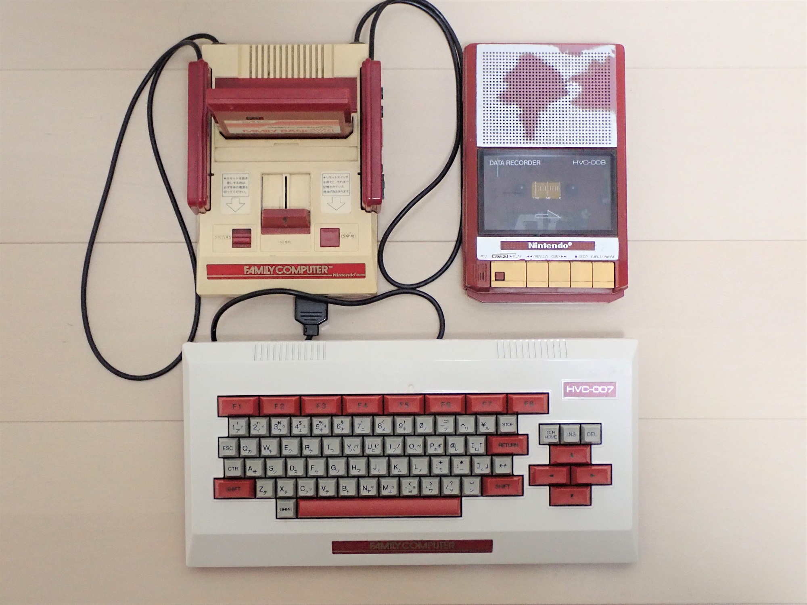
ファミリーベーシック環境のフルセット
「データレコーダー」とは、フロッピーディスク登場以前に利用されたデータ保存装置で、 カセットテープ（磁気テープ）に音声としてデータを保存します。
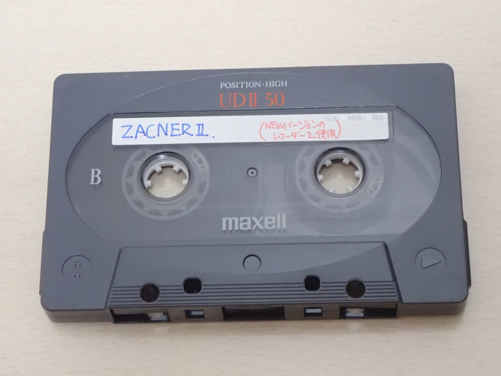
プログラムデータを保存したカセットテープ
ファミリーベーシックは 子供向けコンピュータ学習環境
-
子供向けの安価なパソコン
ファミリーベーシックが発売された 1984年、 第二次ベビーブーム世代が小学校高学年です。 ファミリーベーシックは、この年齢層をターゲットとした製品でした。 初めてプログラミングして見みようという子供たちに取って、 ファミリーベーシックは丁度よいコンピュータ学習環境でした。
ファミリーベーシックの希望小売価格は 14800円 でした。これはファミコン本体と同価格です。 パソコンと考えると、とても安価なものだといえます。
-
子供向けを意識したキーボード
子供が雑に扱っても壊れないよう、キーボードはしっかりとした作りになっています。 安っぽさは全くなく、メカニカルキーボードのような打鍵感があります（接点部分はメンブレン式）。 キーピッチは子供たちの指サイズになっています。 計測したところ、一般的な PC のキーボードがキーピッチ 19mm であるのに対して、 ファミリーベーシックは 16mm でした。 さらに子供たちがキー配置を覚える負担を減らすため、カナキーの配置は50音順になっています。
-
子供向けを意識した命令セット
プログラミングについて全く知識がない子供たちでも、 マリオが出てきて何かを動かした感が得られるようにと、 「MOVE コマンド」という専用の超簡易キャラクタ表示命令が用意されていました。 これを利用した最小サンプルコードは、わずか 8 行のプログラムでした。
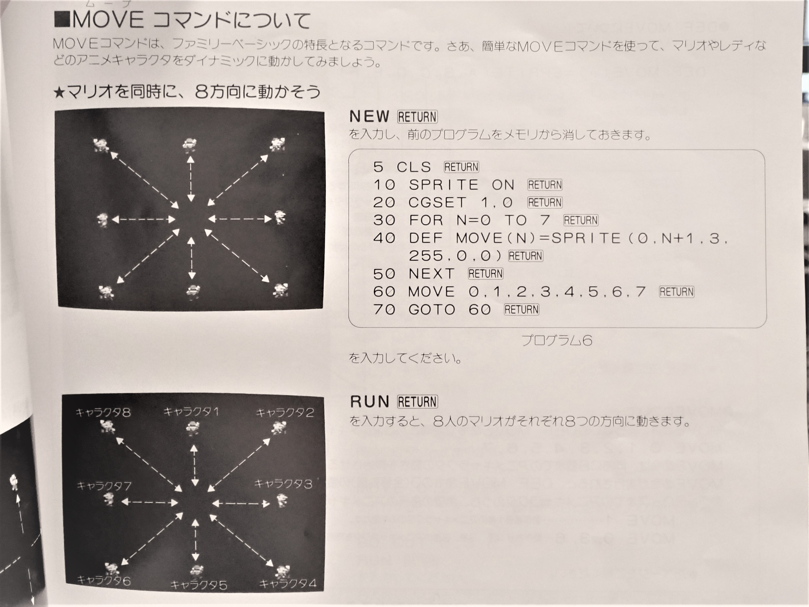
キャラクタアニメーションと移動を行う最小サンプルコード
わずか 8 行のプログラム
子供たちが我慢して入力できるコード量は少ないだろうからとにかくタイプ量を少なくしたい、 という設計意図が伺えます。 同一のサンプルコードは販促用のチラシ（1984年4月28日）にも書かれており、 当初から商品のコンセプトに関わるものであったことが伺えます。
ファミリーベーシックとゲームソフトの連携
-
ファミリーベーシックはゲームソフトのデータ保存手段としても利用された
ファミリーベーシックのデータレコーダーを利用し、 ステージエディット対応ゲームのデータ保存が可能でした。
主な対応ソフトは以下のとおりです。
- 「ロードランナー」（ハドソン 1984年7月20日 発売）
- 「ナッツ＆ミルク」（ハドソン 1984年7月20日 発売）
- 「エキサイトバイク」（任天堂 1984年11月30日 発売）
- 「レッキングクルー」（任天堂 1985年6月18日 発売）
-
ハドソンが積極的にファミリーベーシック対応ゲームソフトを投入
ファミリーベーシック対応ソフトである 「ロードランナー」と「ナッツ＆ミルク」は、 ファミリーベーシック発売から 1 か月後の発売です。 これらは、 ユーザーが作成したステージをカセットテープに保存し、ユーザー間で交換可能であることを強調したタイトルでした。
この 2 作の開発元であるハドソンは、 ファミリーベーシックの BASIC 言語開発にも携わっています。 ハドソンはこれを機会に、 ファミコンにおける初のサードパーティとなりました。
ファミリーベーシックと書籍・雑誌の連携
-
ハドソンがファミリーベーシック関連書籍をリリース
ファミリーベーシック開発に携わったハドソンから、 「ファミリーコンピュータ ファミリーベーシックがわかる本」（1984年12月）という書籍が刊行されました。 漫画による BASIC 言語の説明と、10 本のゲームプログラムが収録されています。
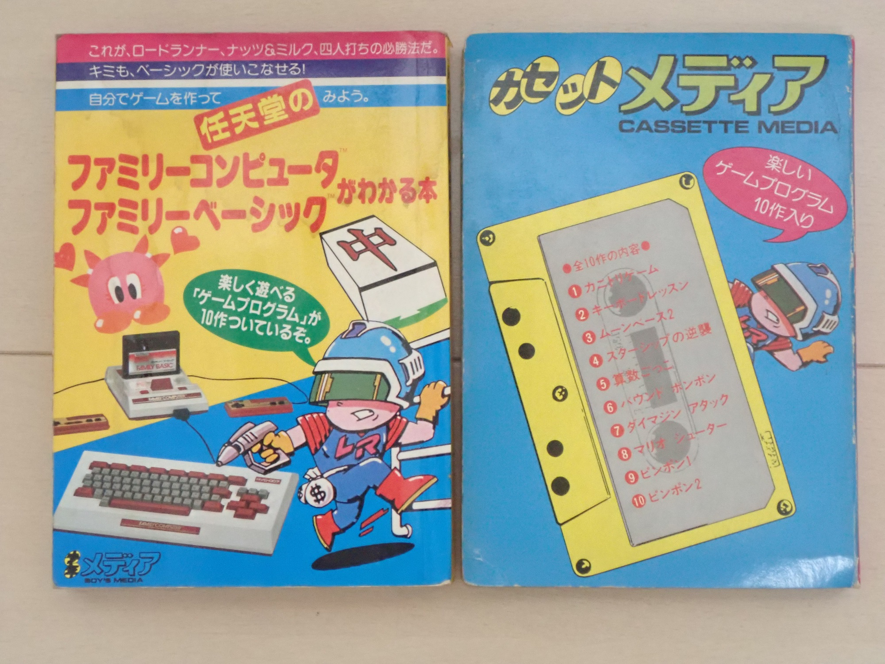
ファミリーコンピュータ ファミリーベーシックがわかる本（ハドソン 1984年12月）
BASIC 言語解説のページはすべて漫画になっており、 サンプルコードの題材に算数の「九九」を扱うなど、 子供たちが理解しやすいように配慮されています。
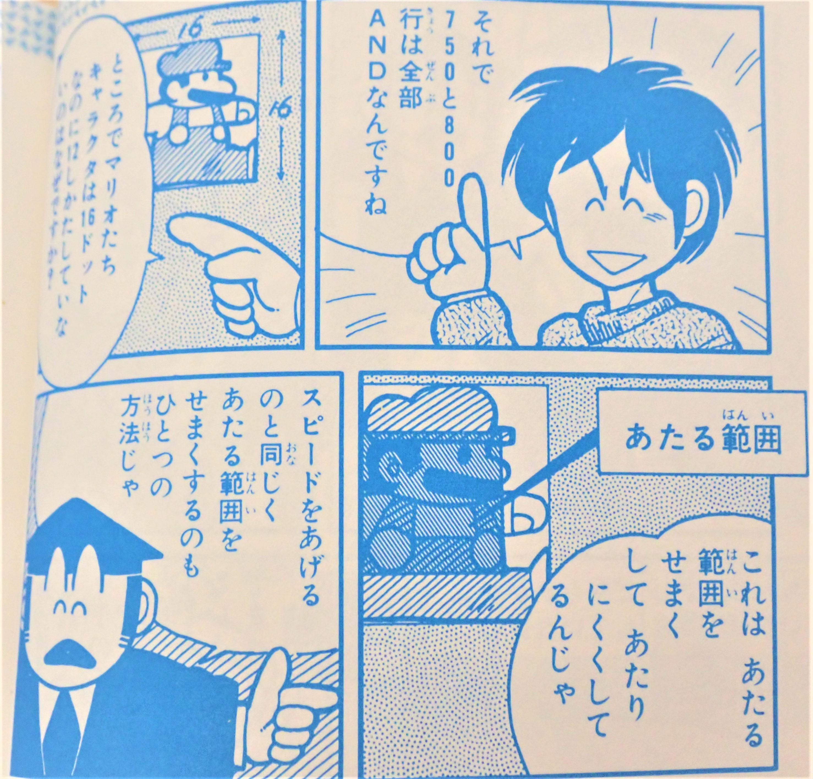
プレイヤの衝突判定は見た目より小さくしよう。
実戦的な内容。
この書籍の構成、漫画の原案、掲載プログラムは、当時ハドソン社員だった高橋名人が担当されています。 本の内容は（2020年）現在読み直しても的確で、 高橋名人が当時いかに凄い仕事をされていたのかがわかります。
高橋名人オフィシャルブログ「16連射のつぶやき」：2012-07-25「ファミリーベーシックがわかる本」の思い出
高橋名人オフィシャルブログ「16連射のつぶやき」：2020-02-10 備忘録
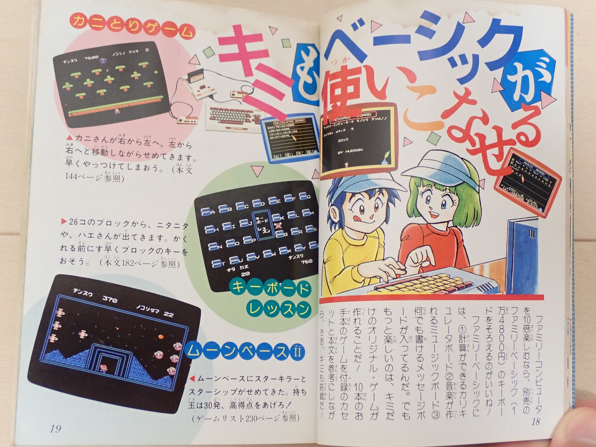
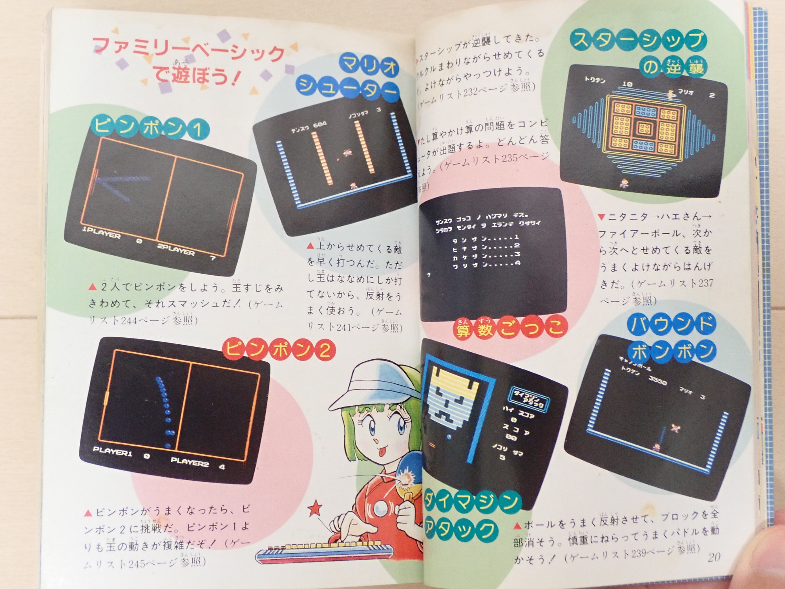
高橋名人が作成された 10 本のゲーム。
キャノンボール のようなゲームも入っている。
この書籍のシリーズ 2 冊目 「少年メディア 2 ロードランナー・ワールド」（1985年6月）。
ロードランナーのステージエディット機能で作られたユーザーの作品を保存したカセットテープと冊子のセットです。 ファミコンにユーザー作成コンテンツ配布の仕組みを始めて持ち込んだ事例です。 巻末にはファミリーベーシックのゲームが収録されており、解説記事が付いています。
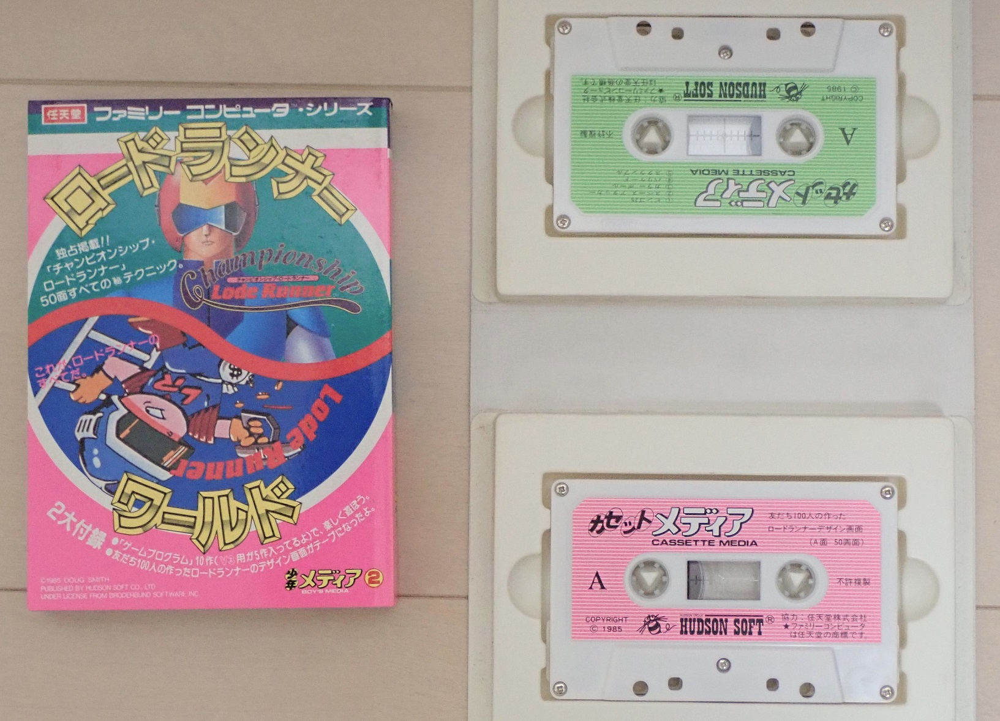
少年メディア 2 ロードランナー・ワールド（ハドソン 1985年6月）
こちらは、巻頭カラー漫画「ロードランナー物語」。
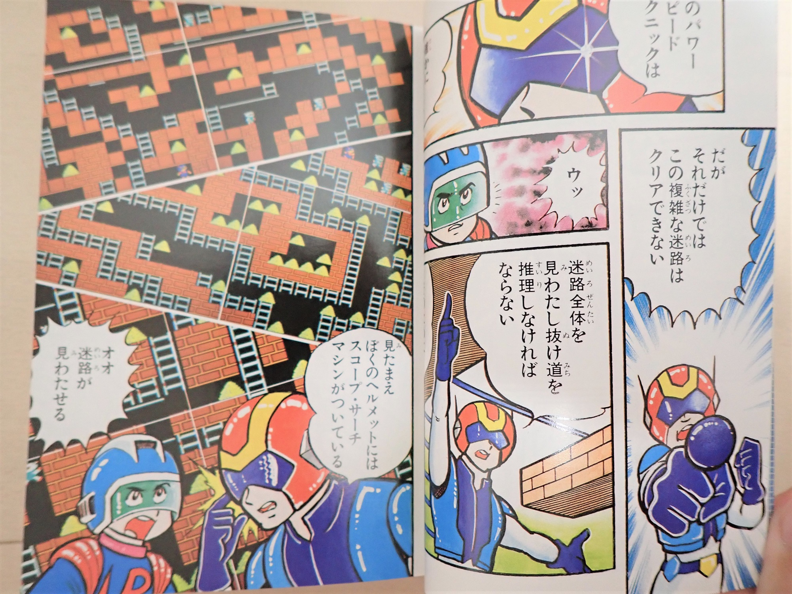
ロードランナー物語
「君のパワー・スピード・テクニックは確かに素晴らしい・・・。」
「だがそれだけではこの複雑な迷路はクリアできない！ （びしっと主人公を指差すチャンピオンシップロードランナー）」
熱い・・・。 全編にわたって、このようなコロコロコミックテイストとなっています。
-
徳間書店もファミリーベーシック関連書籍をリリース
こちらは 「ゲームポシェット」（徳間書店 1985年5月）。 ファミリーベーシックのゲームプログラムが 24 本入ったカセットテープと、 その解説記事を収録した冊子がセットになっています。
全編に渡って漫画が用いられています。 後にメタルスレイダーグローリー（1991年 HAL研究所）の 企画・デザイン・ストーリー・ディレクターを担当する「よしみる」氏が描かれています。
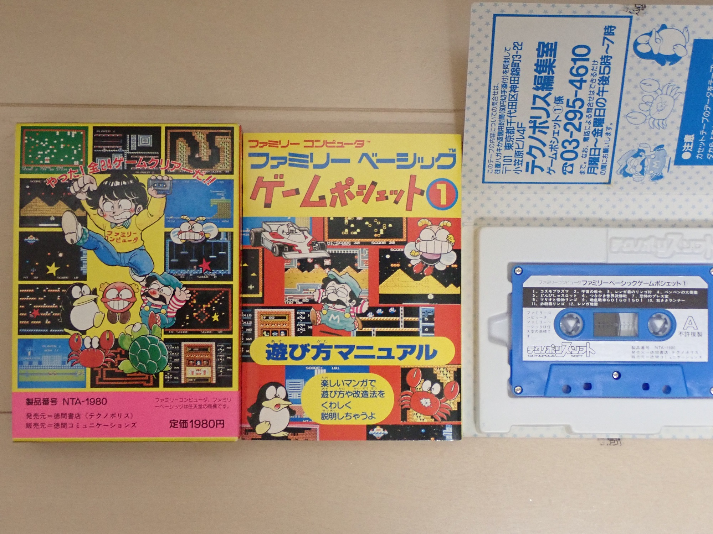
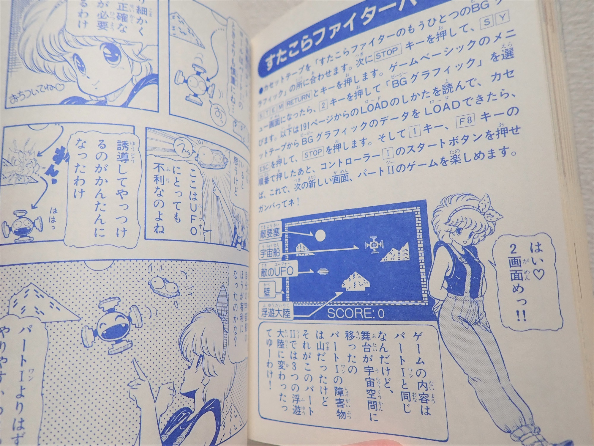
ゲームポシェット（徳間書店 1985年5月）
-
雑誌に読者投稿プログラムが掲載されていた
当時唯一のコンシューマゲーム情報雑誌である「ファミリーコンピュータMagazine」（徳間書店 1985年7月～）では、 「打ちこんでRUN」というコーナーが連載されており、 ファミリーベーシックの読者投稿プログラムが掲載されていました。
また主要なプログラミング雑誌であった「マイコンベーシックマガジン」では、 様々な機種の読者投稿プログラムを扱っていて、 ファミリーベーシックのプログラムも掲載されていました。
ファミリーベーシックではどの程度のゲームが作成可能だったのか
それではここで、ファミリーベーシック上で実際どの程度の品質・規模のゲームが作成可能だったのかをみていきましょう。-
簡単なゲームしか作れない
ファミリーベーシックでは、どうやっても簡単なゲームしか作れませんでした。 当時の他のパソコンと比較してもフリーメモリが極端に少なく、標準で 2K バイト、後期バージョンで 4K バイトしかありませんでした。 BASIC 言語なので、実行速度が遅いことも問題でした。 そしてなにより、グラフィクスデータが ROM 化されているため、 ユーザーが好きなドット絵を描くことができず、 マリオやカメなどの組み込みのドット絵しか利用できないことは致命的な問題でした。
-
ハードウェア内部資料は非公開
BASIC 言語を離れ、 市販のソフトのようにネイティブコードを利用したゲームを作ることも可能ですが、 そのためのハードウェア内部資料は非公開でした。 当時ファミコンは最先端のゲーム機で、その内部は機密扱いです。 任天堂がそれを積極的に公開することはありえないことでした。 その結果、ファミリーベーシックの制約の中でしか、ゲームを作ることができませんでした。
-
ゲームが作り放題の遊び放題ではない
当時の子供たちのファミリーベーシック購入決断理由は、以下のようなものでした。
「ファミリーベーシックを買えば、ゲーム作り放題の遊び放題だから、ゲームを買うより安いはずだ」
しかし実際は、ファミリーベーシック上で作成したゲームは、 市販ソフトの代替になるようなものではありませんでした。
バージョンの分断による混乱
-
わずか 8 か月の間に 4 つのバージョンがリリースされた！
ファミリーベーシックのカートリッジには、 V1.0 V2.0A V2.1A V3.0 の 4 つのバージョンがあります（V2.1A は V2.0A のバグ修正版）。 V1.0 が 1984年6月21日、V3.0 が 1985年2月21日なので、 わずか 8 か月の間にバージョンが 4 つもリリースされた形です。
-
しかもロット毎にどのバージョンが入っているか異なる
カートリッジのバージョンはロット毎に異なり、 商品パッケージからは判別できません。 商品パッケージには、カートリッジとキーボードが同梱されていて、個別に買うことは出来ません。 V1.0 を買ってしまった人は悲惨でした。
当時の任天堂は、V1.0 V2.0A カートリッジの V2.1A 無償交換を行っていたとのことです。 しかし、子供たちではなかなかそこまで頭が回りませんし、任天堂サポートに電話を掛けるのはハードルが高いことでした。
-
ファミリーベーシック V3.0 はソフト単体発売に
恐らく任天堂はこれはまずい状況だと考えたのでしょう。V3.0 はソフト単体発売になりました。 これなら、V1.0 を買ってしまって、V2.1 が欲しい人でも、カートリッジのみアップグレードできます。
「ファミリーベーシック、ブイスリーーーーー！！！！」
この肺活量テストのようなものを見て当時の子供たちは「欲しい！」と思った（なんでも欲しがる）
しかしながらキーボード単体販売はありませんでした。 V3.0 から参入しようと思った人は、 V3.0 カートリッジと、旧バージョン＋キーボードセットを購入します。 すると今度は、新旧カートリッジ 2 個持ち状態になります。 古い方のカートリッジ（とはいえ新品）は捨ててしまうのは躊躇しますし、 大切に取っておいても使い道がありません。 子供たちにとっては、ちょっと複雑な購入体験になってしまっていました。
-
そもそもカートリッジでバージョンを更新していくことに無理がある
ファミリーベーシック V3.0 は、完成度はとても高かったのですが、 バージョン分断により、 商品の位置づけなどが子供たちには理解しづらいものになっていました。
ファミリーベーシックの開発元であり、 その解説本を出していたハドソン自身でさえ、 解説本を書く際にバージョン分断で苦労しているようでした。 執筆を担当された高橋名人は、 V1.0 V2.1 両方のユーザーを想定した記事を書くため苦労しているところに、 バグありバージョンである V2.0A が 1 万台未満という少ロット出荷されていた事実が発覚して、 ギリギリのところで記事の修正をしたと blog に後日談を書かれています。
そもそも、コンピューターの基本ソフトウェアは、 細かくバージョンが上がる性質のものです。 通常はフロッピーディスクなどの媒体を通して、 安価にソフトウェアを最新の状態に更新できるようにします。 しかし、ファミリーベーシックは徹底したコストダウンを行った結果、それが不可能でした。 基本ソフトウェアを読み込む十分な RAM 領域すらありませんでした。
ファミリーベーシック上でのゲーム制作は解析ベースへ移行
-
マイコンベーシックマガジン「ファミリーベーシック・マシン語講座」
ファミリーベーシック V3.0 の売り上げが不振に終わると、 ファミリーベーシック関連書籍はパッタリと出てこなくなります。 任天堂・ハドソンからも追加の動きはなく、 ハードウェア内部資料も非公開のままでした。
そのような中、 ファミリーベーシックの読者投稿プログラムを掲載し続けていた マイコンベーシックマガジン（電波新聞社）が、1987年3月号より 「ファミリーベーシック・マシン語講座」という記事の連載を始めます。 この連載記事では、ファミコンのハードウェア内部仕様が詳細に書かれていました。 このような記事を作成するうえで任天堂の協力があったとは考えにくいので、 非公式なハードウェア解析に基づく記事であったと推測されます。
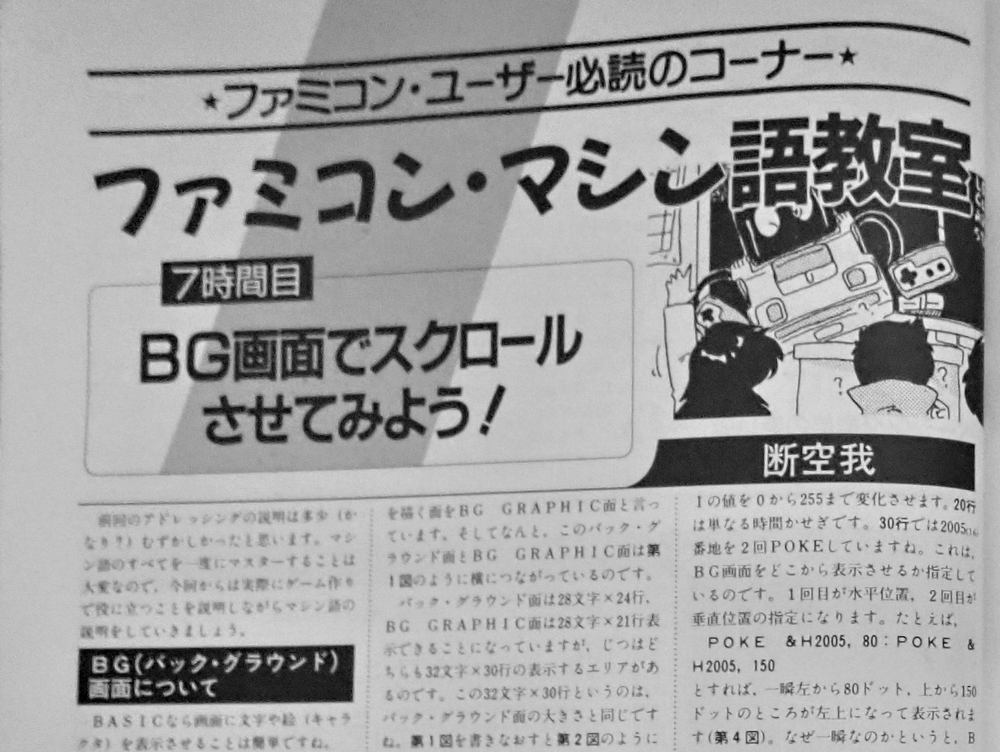
ファミリーベーシック・マシン語講座 by断空我先生
（マイコンベーシックマガジン 1987年9月号）
-
市販ゲームソフト改造ツールのドキュメントにハードウェア解析情報が載っていた
当時の市販ゲームソフト改造ツールのドキュメントに、 ハードウェア内部資料が断片的に含まれていました。 なかでも、「トンカチエディタ」（アイ・ツー 1987年）に添付されていた冊子は、 ゲーム改造という「いけないツール」の解説書でありながらも、 当時手に入る資料としては最も詳細で、バイブル的なものでした。
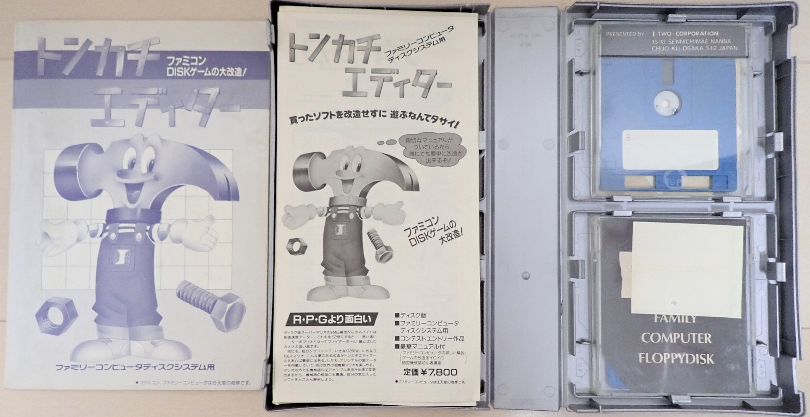
トンカチエディタ（アイ・ツー 1987年7月）
トンカチエディタの実際の画面。
緩い感じの曲とともに、過激な内容のテキストが流れる。
冊子中で、参考図書として「バックアップ活用テクニック（三才ブックス）」が上げられています。 バックアップ活用テクニック（通称バッ活）には、これより早い時期から解析情報が載っていたようです。
トンカチエディタの制作者の人物像が垣間見れるのが、この冊子の最後のページです。
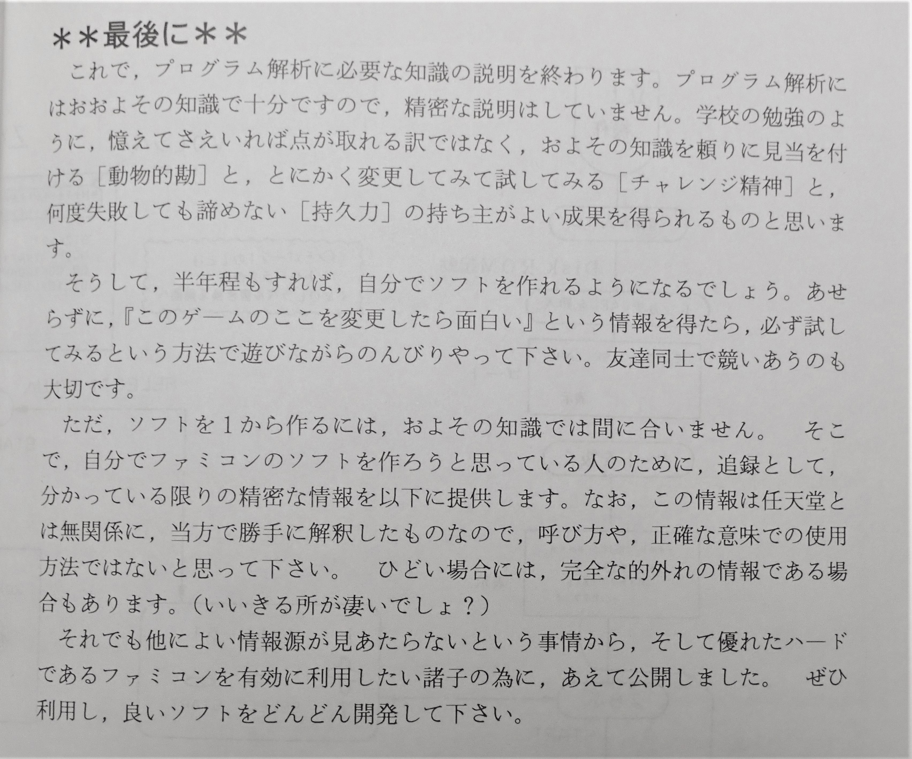
トンカチエディタの冊子の最後のページ
「いけないツール」だと思っていたら、
中の人は自分たちと同じゲームを作る側であることがわかった瞬間。
-
解析情報に頼り、ハードを直接叩きながらゲーム制作
ファミリーベーシック上のゲーム制作は、 これらの解析資料に基づきハードウェアを直接叩くスタイルに変わっていきます。 子供向けのコンピュータ学習環境というコンセプトとは完全にかけ離れた状況になっていきました。
ここから先に進んだ人達には、 やがてファミコンのデベロッパーになることを目標にしていた方々が多くいます。
ポケモンを生み出した「ゲームフリーク」の逸話
ここで、 ファミリーベーシックを利用したファミコンの解析から始まり、 ゲームを完成させ市販ソフトとしてリリースした「ゲームフリーク」の逸話について触れます。-
当時、ファミコンの開発環境を入手することは困難だった
当時、任天堂のライセンシとして 個人レベルのデベロッパが参入することはとても難しいことでした。 たとえ技術や根気があっても、 ファミコンの開発機材や技術資料がなかなか手に入らず、 ゲーム開発に参入することは容易ではありませんでした。
-
ファミリーベーシックでハードウェア解析しながらのゲーム制作
「ゲームフリーク」が まだゲーム系同人サークルだったころ、 ゲーム制作に参入するきっかけとなった有名な逸話があります。 「ゲームフリーク」の方々は、 開発機材が手に入らないなか、 ファミリーベーシックでファミコンのハードウェアを解析し、 ゲームを作り上げました。
ここで補足が必要です。 この逸話だけを聞くと、 ファミリーベーシックが市販相当のゲームが作成可能な、 一般的な開発キットのように感じられるかもしれません。 しかし前述のとおり、実際はそのようなことは不可能です。 ファミリーベーシックは、フリーメモリ領域が非常に狭いだけでなく、任意のドット絵すら作成することができません。 「ゲームフリーク」の方々がファミリーベーシック上で行ったことは、 ハードウェアの仕様確認などの基本的なことと、 組み込みのマリオ等のキャラクタグラフィクスを使ったプロトタイプ作成まででした （開発者インタビューに「マリオが回っていた」と書かれていることから推測）。 そこから先の本格的な制作では、ハードウェア解析結果に基づき構築された本番用の開発環境を使っています。
むしろ大変なのは、この本番用の開発環境の構築だったと考えられます。 現在では、エミュレータなどの仮想環境上で一通り作成したゲームを、 イメージ化して ROM 焼きすれば完了ですが、当時はそのような便利な環境は存在しません。 何の情報も無いなか、 アセンブラやクロス開発環境をどう構築したのか、 どうやってテストやデバッグを行ったのか等々、 謎な部分が多いです。
-
自主制作したゲームを「クインティ」というタイトルで発売
このゲームは当時のナムコに持ち込まれ、「クインティ」というタイトルで販売されました。
GAME Watch の記事： ついにファミコンの名作、あの「クインティ」が帰ってきた！
クインティ（1989年 開発：ゲームフリーク）
開発はファミコンをファミリーベーシックで解析するところから始まった。
これをきっかけに「ゲームフリーク」はゲーム制作に参入し、 のちに初代ポケットモンスターを生み出すことになります。
-
開発開始時期は早く、ほぼゼロからの解析だった
ここで、クインティ開発者がハードウェア解析を行った頃の時系列を確認します。
クインティの発売は、1989年6月27日です。開発期間は3年弱です。 そうすると、開発開始は 1986年末ごろとなります。 開発開始の時点で、解析が完了していたとのことなので、 解析自体はもっと前から行われていたことになります。 つまり時系列上では、 先ほど触れたマイコンベーシックマガジンの記事やトンカチエディタの冊子等々よりも早い時期で （バッ活の解析記事より先だったかどうかは不明ですが）、 何の情報源もないところからの、ほぼゼロからの解析だったと考えられます。 当時はインターネットは無く、BBS も普及以前です。 解析グループメンバ間の情報のシェアは、恐らく電話での口頭や文通で行われています。
補足ですが、 任天堂は元々、ハドソン参入までサードパーティとの協力体制を想定していなかったので、 外部提供向けの開発キットのような物を完璧に揃えていたわけではありません。 クインティ開発者が行ったような解析ベースのゲーム制作は、大手デベロッパでも良く行われていました。 当時のゲーム制作は、既存ソフトの解析、アセンブラ自体の自作、はんだごてを使った機材自作等々は茶飯事だったようです。
任天堂がファミリーベーシックをリリースした本当の目的は？
それではここで、 任天堂がファミリーベーシックをリリースした本当の目的を考えていきます。 以降、推測に基づく話が多くなることをご了承ください。 推測に基づく内容は、断言を避ける表現を使っていきます。-
リビングの TV の座をめぐるホームコンピュータ開発競争
かつて 1980 年代初頭の日本では、ホームコンピュータ開発競争が起きていました。 これは、リビングの TV モニタに接続されるポジション獲得をめぐるハードウェア開発競争です。
ホームコンピュータ開発競争に参加していたハードウェアは、 多くがキーボード付きコンピュータという体裁のラインナップでした。
-
ファミコンは日本のホームコンピュータ競争の勝者に
任天堂はこの開発競争に、キーボードを持たずゲームに特化したハードウェアであるファミコンを投入しました。 ファミコン発売から 1 年後、ファミコンをホームコンピュータへ拡張する周辺機器として、ファミリーベーシックも発売されました。 ファミリーベーシックの開発は、ファミコンのリリース以前からスタートしていたとのことで、 ファミコンが当初からホームコンピュータ狙いのハードウェアであったことが伺えます。 コンピュータとしても利用できる他機種を買うべきか迷っている層に対して、 「ファミコンは必要であればファミリーベーシックを買ってコンピュータとしても使えますよ」 とアピールをする狙いがあったと考えられます。
ファミリーベーシックの実装に関わったハドソン側の経緯が、岩崎啓眞氏の blog に詳しく書かれています。
HUDSONのコト
当時の関係者の直接インタビューがあり、貴重な一次資料です。 （一方で、任天堂側の方々の記録はほとんど存在しません。足りない部分は想像で補間していくしかありません。）
後にファミコンは、ハドソンやナムコと言った強力なサードパーティの協力も得られ、 徐々に競合機種を圧倒していきます。
-
ファミコンの海外向けリリースをどうするかが課題に
日本では勝者になれたファミコンでしたが、 海外へのリリースをどうするかが課題でした。 当時海外では、ゲーム機はキーボード付きホームコンピュータという認識があり、 爆発的シェアを獲得していた Commodore 64（1982年8月発売）や ZX Spectrum（1982年4月発売）などの機種は、 いずれもキーボード付きです。

海外のホームコンピュータであり定番ゲーム機だった Commodore 64
キーボード付きでプログラミングが可能
（画像は wikipedia から抜粋 Public Domain）
後発マシンとして海外にファミコンを売り込む必要があった任天堂は、 Commodore 64 や ZX Spectrum に見劣りしないよう、 ホームコンピュータとしての体裁（外見）を整えるという選択肢を検証する必要がありました。
-
海外向けファミコンのプロトタイプ Advanced Video System
海外向けのファミコンは Nintendo Entertainment System (NES) と呼ばれており、 日本からかなり遅れた 1985 年末に発売されました。 このプロトタイプとして、 1985 年 1 月の CES にて Advanced Video System と呼ばれるハードウェアが発表されました。 キーボード付きファミコンといった仕様のもので、 NES とは全く異なる MSX のような見た目になっています。
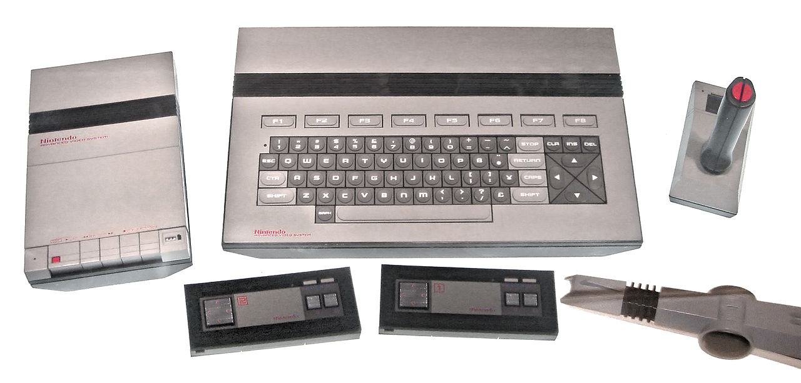
Advanced Video System （画像は wikipedia から抜粋 CC BY 2.0 ）
ニンテンドーワールドの博物館に実物が展示されている。
この画像には映っていないが、ファミコン本体に相当する機器が別途存在し、
カートリッジはそこに差す仕組みだった。
従ってこのキーボードのようなものには、キーボード以外の機能は搭載されていなかったものと推測される。
-
Advanced Video System = ファミリーベーシック V3.0 ?
Advanced Video System の写真をよくみると、 キーボードのキー構成がファミリーベーシックと全く同じです。 専用データレコーダーも、外見が少し異なりますが、ファミリーベーシック用のものと同じものに見えます。 中身はファミリーベーシック V3.0 だったと推測されます。
時系列を整理してみます。
ファミリーベーシック V1.0 から Advanced Video System 発表までわずか半年ほどしかありません。 また、ファミリーベーシック V3.0 のリリースは、Advanced Video System 発表の後です。 これらは関連したプロジェクトだったと考えられます。1983年初頭（岩崎啓眞氏の blog より） ファミリーベーシック開発開始 1983年7月15日 ファミリーコンピュータ 発売 1983年秋前（岩崎啓眞氏の blog より） ファミリーベーシックほぼ開発完了 1984年6月21日 ファミリーベーシック V1.0 発売 1985年1月 北米 CES にて Advanced Video System 発表 1985年2月21日 ファミリーベーシック V3.0 発売 1985年10月18日 北米で Nintendo Entertainment System 発売 1986年2月21日 ファミリーコンピュータ ディスクシステム 発売
-
Advanced Video System はキャンセルになった
Advanced Video System 発表直後に、 日本国内ではファミリーベーシック V3.0 がリリースされます。 ファミリーベーシック V1.0 発売から 8 か月後のリリースです。 多くの子供たちが、ファミリーベーシックを買ったけれど、まだ十分に使いこなせないでいるなか、 限界を感じるレベルまで使いこなした一部の層向けの上位バージョンをリリースした形です。
任天堂は、8 か月の間にファミリーベーシックのバージョンを 3 回更新しています。 なぜこのようなことをやっていたのでしょうか？ 恐らく、Advanced Video System リリースに向けてファミリーベーシックの完成度を上げて、 さらにそれを日本国内に先行投入し、商品のポテンシャルを見極めようとしていたと考えられます。
前述のとおり、 ファミリーベーシック V3.0 は完成度は高かったのですが、 バージョン分断による混乱に拍車をかけるような存在になっていました。 任天堂も、 この先このやり方でファミリーベーシックの更新を入れていくのは難しいと考えたはずです。 V3.0 の売り上げは不振に終わりました。
Advanced Video System はキャンセルになり、 海外向けファミコンは、 キーボード無しの Nintendo Entertainment System (NES) として発売されました。 任天堂が Advanced Video System をキャンセルした本当の理由はわかりませんが、 日本国内のファミリーベーシック V3.0 上で発生していた問題が、 ネガティブな判断材料の一つになった可能性が考えられます。
{kind=link}
足りなかったもの = ファミリーコンピュータディスクシステム
ファミリーコンピュータディスクシステムは、 ファミリーベーシックの弱点を補うことができる理想的なシステムでした。 しかしながら、それが活用されることはありませんでした。 このあたりを掘り下げてみていきます。-
ディスクシステムなら広大な RAM 領域が利用できる
ファミリーベーシックのバージョン分断の問題を解決するには、 更新ソフトウェアが配布できる大容量メディアと、それを読み込むための広大な RAM 領域が必要でした。 具体的には、ファミリーコンピュータディスクシステムのようなものが必要でした。 ディスクシステムのリリースは、 ファミリーベーシック V3.0 より 1 年後の 1986年2月21日 でした。
-
残念ながらファミリーベーシック V4.0 のようなものはリリースされなかった
ファミリーコンピュータディスクシステムを利用すれば、 ファミリーベーシックの弱点はすべて解決することになります。 しかし、ディスクシステム上で動作するファミリーベーシック V4.0 のようなもの（通称ディスクベーシック）は リリースされませんでした。
この時すでに、 任天堂にとって「ファミコンの北米リリース問題」は日本と同様のゲーム機特化スタイルで決着がついていて、 それ以上ファミリーベーシックについてアップデートする必要性がなくなっていたと考えられます。これを書いている私自身、ディスクベーシックをとても期待していました。 そしてそれがリリースされなかったことは、とても残念でした。 どのような顛末があったのかとても興味がありますが、何の記録も残されて居ないので真相が全く不明です。
-
任天堂はすっかりガードが固くなってしまった
ファミリーコンピュータディスクシステムには、 有名な「任天堂許諾画面」を表示しないとゲームが開始できないというプロテクトが入っていました。 ファミリーベーシック V3.0 から 1 年の間に、 任天堂はすっかりガードが固くなっていました。
当時ファミコンを解析していたハッカー達は、ファミコンの弱点は RAM が少ないことであると認識していて、 当初ディスクシステムにとても期待していました。 しかし、任天堂許諾画面の存在により、ファミコンを独自にハックして活用することは困難でした。 これにはハッカー達は相当頭にきたようです。 トンカチエディタの冊子など、各所にハッカー達の不満がテキストとして残されています。ちなみにこの任天堂許諾画面も、ハッカー達の手であっさりと回避されてしまいます。 ハッカー達は、ブート時にディスクから読み込まれるデータの転送先アドレスを、 VBLANK 割り込みベクタが書かれているアドレスに設定することで、 VBLANK 割り込み先をユーザープログラムに変更したのち、わざと無駄に長いデータを読ませることで VBLANK 割り込み発生を待ち、 ユーザープログラム領域にジャンプさせることにより、許諾画面表示をスキップしてしまいました。 トンカチエディタもこの仕組みを使っているので、起動時に許諾画面が出ません。
トンカチエディタをリリースしていたアイ・ツーは、ファミリーベーシック Ver2.1 にパッチを当てて、 ディスクベーシック化するキットを販売していました。 恐らく、ユーザー所有のカートリッジ（合法）＋アイ・ツー作成の差分（合法）＋許諾画面スキップ（合法）の合わせ技で、 合法的にディスクベーシック化するものだったと考えられます。 アイ・ツーをはじめハッカー気質の人達がやることはこの頃から凄くて、 今日に至るまで、壮絶なイタチごっこが展開されています。
余談：ハドソンの話
最後に、 ファミリーベーシック開発に携わり、 それをきっかけにファミコン初のサードパーティとして参入したハドソンが、 ファミリーベーシック上でやったことをもう少し掘り下げて見てみます。 推測を多分に含むので、ご注意ください。-
ライセンス料を回避可能なデータ配信経路を確立
再度触れますが、ハドソンはファミリーベーシックと同発（一か月遅れ）で、 ファミリーベーシックを利用したステージデータの交換に対応したゲームとして、 「ロードランナー」と「ナッツ＆ミルク」を発売しています。 それだけではなく、同社はそれらのゲームのステージデータを収録した書籍と、 ファミリーベーシックのプログラムを収録した書籍を刊行しています。
ここで疑問なのが、 これらの書籍で発生した収益について、 ハドソンは任天堂に対してライセンス料を支払う必要があったかどうか？ です。 いずれも、ハドソン自身が出版しているので、 収益はすべてハドソンの懐に入ったと考えられます。
ハドソンがサードパーティとしてゲームソフトを制作することになった時、 任天堂から制作するゲーム内容について、とくに注文は無かったと言われています。 このことから、 ファミリーベーシックを利用してゲームのステージデータの保存・配布を可能にするというアイデアは、 ハドソン独自のものだったと考えられます。
-
BASIC 言語に PEEK POKE CALL 命令を搭載
それだけではありません。 ハドソンは、ファミリーベーシックに PEEK POKE CALL 命令を入れています。
PEEK は、指定のメモリを直接読む命令です。
POKE は、指定のメモリに直接書く命令です。
CALL は、指定のメモリのネイティブコードを実行する命令です。
この 3 つが揃うと、 任天堂にとって機密情報であるはずのファミコン内部仕様は、 解析し放題になります。
これらの命令は、どういう経緯で搭載されたのでしょうか？ 任天堂からのオーダーがあったとは考えにくいです。 恐らく、BASIC 言語を実装したハドソンの担当者が、独自の判断で入れたものです。
-
ファミコンの内部仕様は丸裸に
ハドソンが当初やっていたことは、 ステージエディット対応ゲームを 2 本もリリースしたり、 関連書籍を次々販売したり、 PEEK POKE CALL 命令を仕込んだりと、 いずれも「任天堂にライセンス料を払うことなく、 ファミコンを活用して収益を上げる手段の開拓」という点が共通しています。
ハドソンは元々コンピュータの活用が本業のソフトウェアメーカーなので、 セオリー通りにやった結果にすぎないかも知れませんが、 ファミコン参入一発目でこれだけのことを開拓したことは凄いです。 ともかく結果として、ファミコンの内部仕様は丸裸になってしまいました。
まとめ
ここまで推測と事実が入り混じった感じで書いてきたので、 それらを分離しながら整理します。ファミリーベーシックは、子供向けキーボードを持ち、子供向け命令セットが使える、安価なコンピュータ学習環境でした。 ゲームや書籍との連携が行われました。（いずれも事実）
任天堂は、海外向けファミコンのリリースのため、 ホームコンピュータ仕様の Advanced Video System を開発していました（事実）。 そのシステムは、ファミリーベーシック V3.0 と同等のものでした（推測）。 任天堂は、海外向けリリースのため開発を急いでおり（推測）、 その結果ファミリーベーシックのバージョン分断を発生させていました（事実）。
ファミリーベーシック V3.0 の完成度は高かったのですが、 バージョン分断により子供たちに取ってわかりにくい商品になっていて、 販売は不振に終わりました（事実）。 フロッピードライブと大容量 RAM を持たないファミコン上で、 このような基本ソフトウェアの更新を行っていくことは無理がありました（事実）。 それらの事情が影響して（推測）、 ホームコンピュータ仕様のプラン自体がなくなりました（事実）。 この時点で任天堂としては、ファミリーベーシックのようなものを継続する意味がなくなり（推測）、 それ以降のアップデートはなくなりました（事実）。
極一部のハッカー系ユーザーやデベロッパーは、 ファミリーベーシックを使ってハードウェア解析を行い、 ゲームを作り上げて行きました（事実）。 任天堂としては想定違いの事態でしたが、 結果的に「ポケットモンスター」を生み出すきっかけにもなりました（事実）。 任天堂にとって、 ファミリーベーシックはビジネスとしては大成功とは言えませんでしたが（推測）、 図らずも先行投資としては、莫大な効果を上げることとなりました（事実）。
以上です。
1998/09/14 初出
2021/02/03 全面的リライト
2021/02/11 最終更新
文責： よっしん
[戻る]